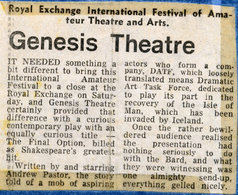

Chapter 19. Shakespeare's Greatest Hit
We did nothing Genesis Theatre-wise until it was time to put in our bid for the 1982 Royal Exchange Amateur festival. In retrospect one can see perhaps that things were beginning to wind down a little in the group. The early years we had been very prolific, now we were down to one show a year. I personally had been spending my time wearing my classical guitarist's hat by doing the majority of the Barrios transcriptions, and so did not feel I was doing nothing!
By now, 'Marilyn' was already planned for a week's run at the Altrincham Garrick, but it was the 50th anniversary of the Garrick Theatre - their Golden Jubilee - and they didn't want us to grab the headlines with a premiere at the 1982 Royal Exchange festival. So, Andrew Pastor came up with a play of his own called 'Shakespeare's Greatest Hit - The Final Option', which we went into with our eyes firmly shut... a bad move as it turned out. This year our festival performance date was to be September 4th 1982.

As for 'Shakespeare...' I wrote the music without seeing the play, which was a good job because it wasn't very good. In fact everyone said that the music was the only thing they enjoyed. The play was too long and too unfunny in the very long 2nd half, and moreover too under-rehearsed, mainly because it was too wordy, and difficult to learn. I even had 10 lines of dialogue and a speaking part as 'the musician' (and I still loathed it)!
The premise of the show was summed up by the Royal Exchange Theatre's flyer:
"Why are Hamlet, Henry V and Othello on board a Royal Navy Task Force? Can Britain win the Eurovision Song Contest? Will Portia's peace-seeking mission prosper? This is Shakespeare with a disco beat... shock! Horror! What is the real truth behind this culture clash?"
This only proved that they didn't know what was going on in the play either!
Memorable events in the play included Bill Johnson drying up in the middle of one speech, and instead of trying to bluff his way through it, he just walked off, leaving everybody else with nothing to do but stand there. OK, the odd part was good, e.g. the 'Stars on Shakespeare' segue and the Eurovision Sonnet Contest. The 'To Be or Not To Be' song done with a wailing soprano, a la Elgar's Land of Hope and Glory, and the other songs which I half-remember were quite good, but now have completely forgotten. As for the rest... oh dear!
The critique was remarkably kind, considering how awful it was and how rubbish we had been. I think that it was possibly because he didn't understand it (who did?), he probably thought that he ought to have done, and therefore did not want to appear foolish by admitting as much, so gave it a good write up!
The only cast names that were from the 'old days' were Mike Monahan, Chris Fogg (who played a part too) Jacqui, and Bill Johnson, Alison Davis and myself, as 'Ian the Musician'. So you could see that by this time, the lack of anything decent to do, the long protracted gaps in between shows, and the general closeness we had all felt through the good times was wearing a bit thin. A couple of dud shows, one or two cancelled ones, and we were on our uppers. As it was, it was the last official performance that Genesis did, but one thing did remain to be done that was Genesis in all but name and that was the long delayed 'Marilyn'.